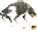

Once Sasha saved my life. When I was only 4 years old, I started to go into the street to get a ball that had rolled across the street. Of course I did not think to look for cars! Sasha got in front of me and knocked me backwards onto the sidewalk. I was mod until I saw the car go by where I would have been. Then I was so happy that Sasha was smarter than I was!
Back to Haster's page
01/05/02

-Los Lobos - my team